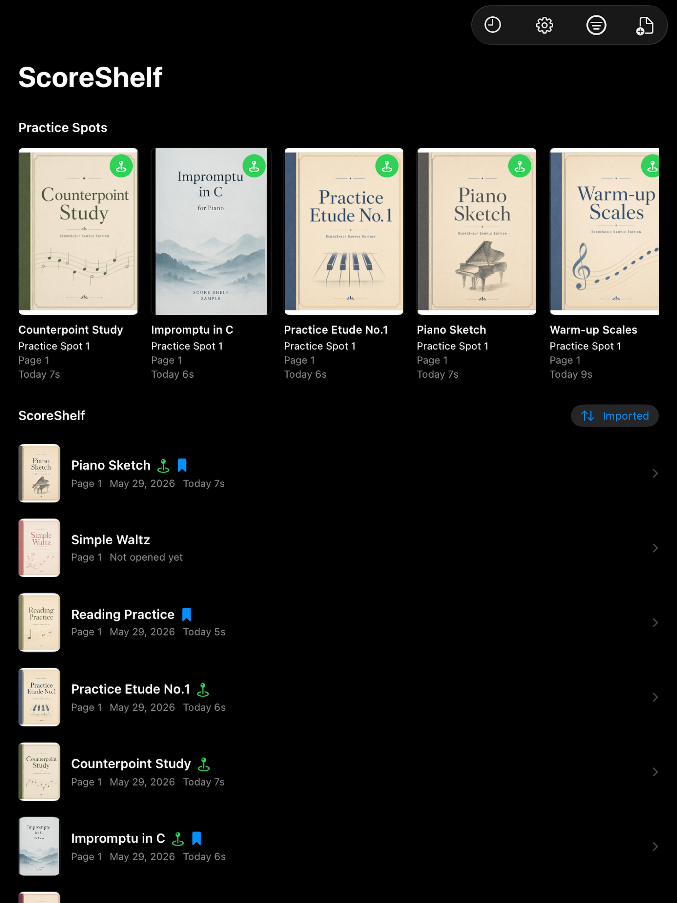
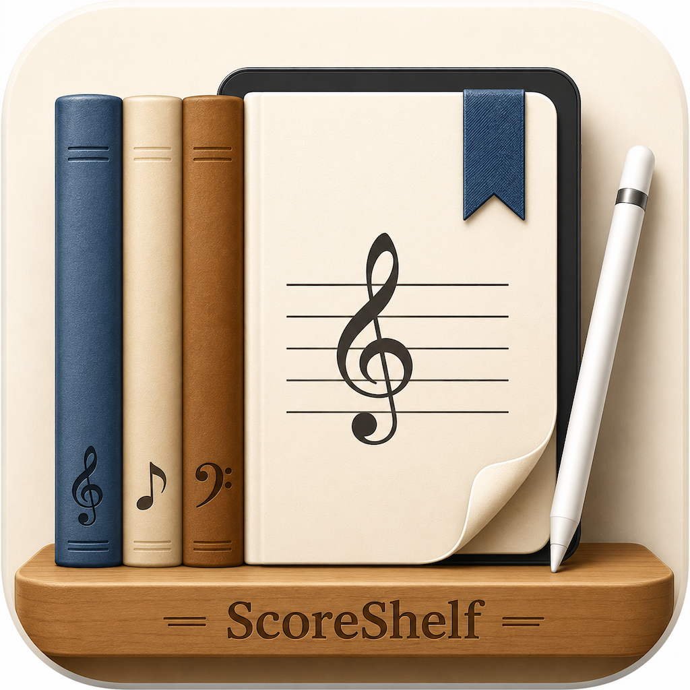

Screenshots



Free iPad Sheet Music Library
ScoreShelf is a free iPad app for keeping sheet music PDFs in one place, opening them quickly, and adding light handwritten notes while you practice. It is designed around a practical score library: import PDFs, jump back to useful pages, mark practice spots, and quietly look back on your practice history with a calendar-style heatmap and links back to the scores and pages you worked on.

Keep PDFs together and return to the right score without hunting through files.
Treat important passages as working locations, not just static bookmarks.
Add quick handwritten notes while keeping the reader simple and score focused.
Look back at what you practiced with a calendar-style heatmap, then jump directly back to the score and page.
Email: kjdevapphelp@gmail.com
Please include: iPad model, iPadOS version, app version, and a short description of the issue.